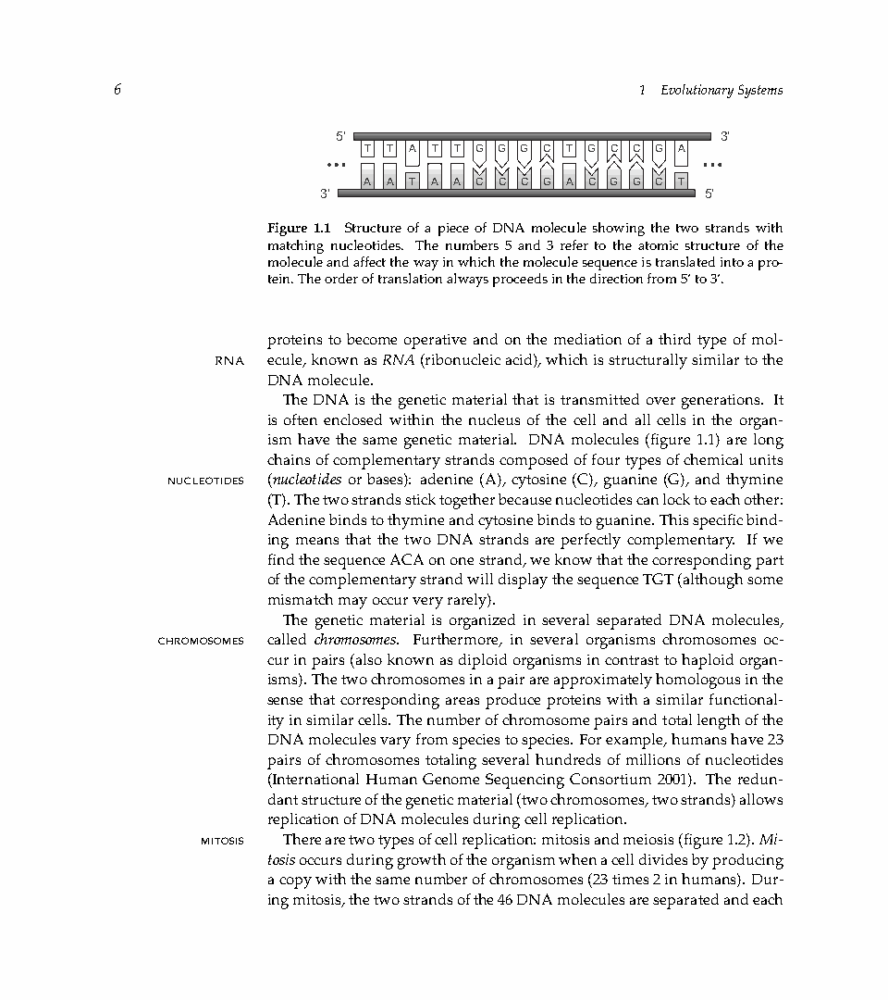
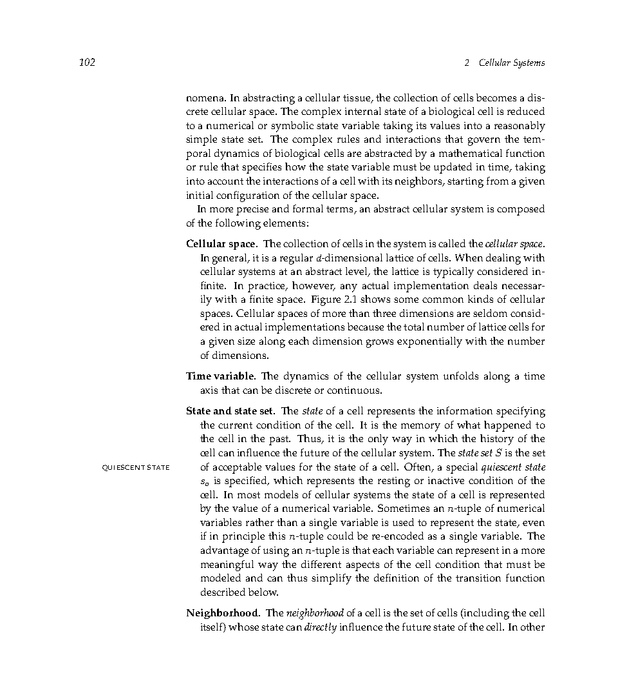
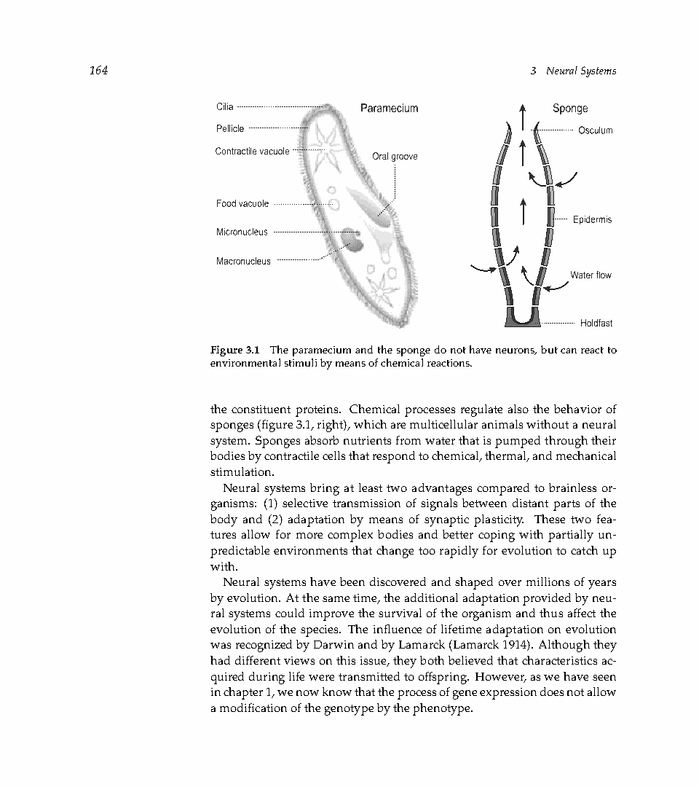

| Title | Bio-Inspired Artificial Intelligence: Theories, Methods, and Technologies（生物启发人工智能：理论、方法与技术） |
| Authors | Dario Floreano（洛桑联邦理工学院 EPFL，智能系统实验室 LIS 主任），Claudio Mattiussi（EPFL，计算智能研究员） |
| Affiliation | EPFL（瑞士洛桑联邦理工学院），智能系统实验室（Laboratory of Intelligent Systems, LIS）——欧洲进化机器人学和生物启发工程领域的核心研究机构 |
| Venue | MIT Press，2008 年，共 680 页。ISBN: 978-0-262-06271-8。Intelligent Robotics and Autonomous Agents 系列丛书（Ronald Arkin 主编） |
| DOI / Links | MIT Press 官方页面 | 类型：学术教科书 | 章节：共 14 章（三大板块） | 引用量：1000+ |
| TL;DR | 这是生物启发人工智能领域的权威教科书，以自组织和自适应性为统一主线，将五大生物启发计算范式——（1）进化计算（遗传算法、进化策略、遗传编程）；（2）神经计算（人工神经网络、脉冲神经网络、神经进化）；（3）发育系统（人工胚胎发生、基因调控网络 GRN、形态发生）；（4）人工免疫系统（克隆选择、免疫网络、负选择异常检测）；（5）群体智能与集体行为（蚁群优化、粒子群优化、群体机器人学）——贯穿为统一的科学与工程框架。核心主张：不是复制生物的外在形态，而是提炼产生稳健智能行为的深层生成机制。 |
| Inspiration Source | → What Insight It Inspired | Type |
|---|---|---|
| 达尔文自然选择与种群遗传学 —— 种群在世代间通过变异、遗传和选择累积适应性 | → 进化算法作为通用黑箱优化器：不需要梯度信息、可处理混合离散-连续空间、支持多目标和多模态搜索。关键工程洞察：进化不仅可用于参数优化——也可用于搜索架构、程序结构和设计规则本身（遗传编程、神经进化、发育编码） | 搜索范式 |
| 生物神经网络 —— 大量简单处理单元通过可调节强度的突触连接，实现模式识别、联想记忆和运动控制 | → 人工神经网络 + 神经进化：不只是用 BP 训练固定架构——进化可以同时搜索架构、神经元模型和可塑性规则。Spiking Neural Networks (SNN) 的引入使得时间信息的处理成为网络动力学的一部分而非额外的"记忆模块" | 表示与学习 |
| 胚胎发育 —— 从单个受精卵通过细胞分裂、分化和形态发生构建复杂多细胞生物体 | → 人工发育系统：将"紧凑基因型 + 发育规则 = 复杂表型"的生成范式应用于人工系统——如用基因调控网络（GRN）生成模块化神经网络、用人工形态发生生成机器人身体形态。这是解决"大规模系统自动构建"问题的关键 | 生成机制 |
| 脊椎动物免疫系统 —— 通过体细胞超变异（somatic hypermutation）和克隆选择产生高度特异性的抗体，并具备终身学习和自我/非我识别能力 | → 人工免疫系统：将免疫系统的三个核心机制（克隆选择——局部搜索 + 亲和力成熟；免疫网络——维持抗体多样性的自调节；负选择——从正常模式中学习"非我"的检测器）转化为优化、异常检测和模式识别的算法。与进化算法互补——免疫系统的"终身"适应尺度介于进化（多代）和学习（单个体）之间 | 分布式学习 |
flowchart TB
subgraph BIO["生物观察层"]
direction LR
BIO1["分子/细胞生物学: 基因调控 · 信号传导 · 细胞分化 · 免疫响应"]
BIO2["系统/行为生物学: 神经编码 · 学习与记忆 · 群体行为 · 生态系统"]
end
subgraph PRINCIPLE["核心原则提取"]
direction LR
P1["自组织: 全局模式从局部规则涌现 · 无需中央控制器"]
P2["适应性: 系统根据反馈调整结构/参数 · 在多个时间尺度上运作"]
P3["具身性: 智能取决于身体、环境与控制器之间的闭环交互"]
end
subgraph PARADIGMS["五大计算范式"]
direction LR
EC["进化计算: GA · ES · GP · 多目标EA"]
NC["神经计算: ANN · SNN · 神经进化 · Hebbian学习"]
DS["发育系统: 人工胚胎 · GRN · 形态发生 · 间接编码"]
AIS["人工免疫: 克隆选择 · 负选择 · 免疫网络 · 危险理论"]
SI["群体智能: ACO · PSO · 群体机器人 · 蚁群/蜂群算法"]
end
subgraph APPLY["工程应用"]
direction LR
ROBOT["机器人: 自动设计 · 在线适应 · 群体协作 · Sim-to-Real"]
OPT["优化: 调度 · 路径规划 · 多目标 · 动态/随机环境"]
PATTERN["模式识别: 分类 · 异常检测 · 聚类 · 数据挖掘"]
end
BIO1 & BIO2 --> P1 & P2 & P3
P1 & P2 & P3 --> EC & NC & DS & AIS & SI
EC & NC & DS & AIS & SI --> ROBOT & OPT & PATTERN
classDef bio fill:#fef7ed,stroke:#f59e0b,stroke-width:2px,color:#92400e
classDef princ fill:#e8f0fe,stroke:#3b82f6,stroke-width:2px,color:#1d4ed8
classDef para fill:#f0ebfd,stroke:#8b5cf6,stroke-width:2px,color:#6d28d9
classDef app fill:#e6f7ee,stroke:#10b981,stroke-width:2px,color:#047857
class BIO1,BIO2 bio
class P1,P2,P3 princ
class EC,NC,DS,AIS,SI para
class ROBOT,OPT,PATTERN app
flowchart TB
subgraph MICRO["微观: 分子/细胞尺度"]
direction LR
M1["基因调控网络 GRN
转录因子激活/抑制
→ 细胞分化和模式形成"]
M2["免疫网络
抗体-抗原亲和力
→ 克隆扩增和记忆"]
end
subgraph MESO["中观: 个体/器官尺度"]
direction LR
ME1["神经可塑性
Hebbian规则: 一起放电的神经元连接增强
→ 学习和联想记忆"]
ME2["胚胎发育
细胞分裂+分化+凋亡
→ 从单细胞到复杂器官"]
end
subgraph MACRO["宏观: 群体/社会尺度"]
direction LR
MA1["群体优化
蚁群信息素 · 粒子速度更新
→ 分布式路径发现"]
MA2["进化动态
变异+选择+遗传
→ 种群适应度提升 · 物种形成"]
end
subgraph UNIFY["统一原理"]
U["所有尺度共享: 局部信息 + 局部规则 + 迭代 = 涌现全局模式
不需要上帝视角 · 不需要中央控制器 · 可扩展到任意规模"]
end
MICRO --> UNIFY
MESO --> UNIFY
MACRO --> UNIFY
classDef micro fill:#fef7ed,stroke:#f59e0b,stroke-width:2px,color:#92400e
classDef meso fill:#e8f0fe,stroke:#3b82f6,stroke-width:2px,color:#1d4ed8
classDef macro fill:#f0ebfd,stroke:#8b5cf6,stroke-width:2px,color:#6d28d9
classDef unify fill:#e6f7ee,stroke:#10b981,stroke-width:2px,color:#047857
class M1,M2 micro
class ME1,ME2 meso
class MA1,MA2 macro
class U unify
flowchart TD
subgraph PHASE1["1. 生物观察与实验"]
direction LR
B1["行为实验: 测量生物体在受控条件下的表现"] --> B2["生理实验: 记录神经活动、基因表达、激素水平"] --> B3["计算模型: 建立生物的机制性数学模型"]
end
subgraph PHASE2["2. 机制抽象"]
direction LR
A1["识别对智能行为关键的局部规则"] --> A2["定义可计算的状态、交互和更新函数"] --> A3["明确简化: 哪些生物细节被保留? 哪些被放弃? 为什么?"]
end
subgraph PHASE3["3. 算法实现"]
direction LR
AL1["选择合适的数据结构和搜索/学习算法"] --> AL2["参数调优: 种群大小、学习率、退火温度"] --> AL3["大规模并行实现: GPU/集群/FPGA"]
end
subgraph PHASE4["4. 双重验证闭环"]
direction LR
V1["工程验证: 在基准测试和真实任务上评估性能"] --> V2["生物验证: 算法行为是否与生物观察一致? 产生新可预测假说?"]
end
PHASE1 --> PHASE2 --> PHASE3 --> PHASE4
V2 -.->|"新假说 → 新实验"| B1
V1 -.->|"性能瓶颈 → 算法改进"| AL2
classDef p1 fill:#fef7ed,stroke:#f59e0b,stroke-width:2px,color:#92400e
classDef p2 fill:#e8f0fe,stroke:#3b82f6,stroke-width:2px,color:#1d4ed8
classDef p3 fill:#f0ebfd,stroke:#8b5cf6,stroke-width:2px,color:#6d28d9
classDef p4 fill:#e6f7ee,stroke:#10b981,stroke-width:2px,color:#047857
class B1,B2,B3 p1
class A1,A2,A3 p2
class AL1,AL2,AL3 p3
class V1,V2 p4
| 类别 | 内容 | 维度 |
|---|---|---|
| 输入 | 任务规范（期望的系统级行为）+ 生物启发的机制模板（五个范式中选择适用的）+ 评估标准（性能指标） | 任务可从简单函数优化到复杂的机器人行为学习——关键区别在于是否定义了让全局行为涌现的局部规则 |
| 输出 | 一个自组织/自适应的智能系统——它不被告知"做什么"，而是被赋予"如何在交互中发现做什么"的生成机制 | 系统性能：鲁棒性（对噪声、故障、环境变化的容忍度）+ 可扩展性（系统规模增大时性能是否保持）+ 适应性（面对未见情况的行为调整能力） |
| 目标 | 建立生物启发 AI 的统一概念与方法体系——不是要替代传统 AI（逻辑推理、规划），而是在传统 AI 失效的领域（不确定性、非结构化环境、动态变化）提供补充 | 五大范式各自的目标不同：进化 = 全局搜索最优设计；神经 = 学习从感知到行动的映射；发育 = 从紧凑基因型生成复杂结构；免疫 = 分布式异常检测和学习；群体 = 大规模分布式鲁棒决策 |
本书不是一个算法论文而是一本知识综合教科书——它解决的是"如何系统地理解和应用生物启发 AI"的元问题。不同于单个算法的论文（展示"方法 A 在数据集 D 上比方法 B 好 Y% "），本书的价值在于提供了：（1）概念地图——五大范式各自的来源、机制、适用范围和局限；（2）选择框架——给定一个工程问题，如何选择（或组合）合适的生物启发方法；（3）批判性视角——每种方法的简化程度及由此带来的能力边界。对于研究人员，这提供了设计新算法时的"灵感工具箱"；对于工程师，这提供了选择合适方法时的"决策框架"；对于学生，这提供了进入该领域时的"系统化学习路径"。
⚠ 表头用英文，正文用中文
| Prior Method | Core Idea | Why It Fails |
|---|---|---|
| 符号 AI（Symbolic AI / GOFAI） | 用逻辑规则和符号表示知识，通过推理引擎进行演绎和规划 | 脆弱：依赖完美、完整的先验知识——真实世界充满模糊性、例外和部分可观测性。符号系统在"已知已知"的封闭世界中有效，但在遇到未预见情况时完全崩溃。且知识获取（知识工程）是瓶颈——需要领域专家手动编码。 |
| 行为式 AI（Behavior-based AI, Brooks 1986） | 将智能分解为层次化的感知-行动模块（如"避障"、"探索"、"充电"），通过仲裁/融合产生行为 | 无法泛化：行为模块虽然是手工设计的，但它们之间的仲裁机制仍然依赖人类预设的优先级。在复杂环境中，预设的仲裁逻辑经常出错（如"探索"行为驱使机器人进入死胡同，"避障"行为又无法帮助其逃脱）。此外，行为之间的涌现冲突难以在设计阶段预见。 |
| 传统机器学习（决策树、SVM、浅层 NN） | 从标注数据中学习输入-输出映射 | 依赖大规模标注数据和独立同分布假设。在机器人等具身智能场景中，标注数据昂贵（每次标记需要实际运行机器人），且数据不是 i.i.d. 的（动作改变环境，环境改变传感器读数——闭环效应使得"训练集"无法独立于"策略"）。此外，浅层模型无法自动学习层次化特征表示。 |
| 纯工程优化方法（梯度下降、凸优化） | 在平滑、可微、凸的假设下高效搜索最优参数 | 不可微分 + 非凸 + 多模态：生物启发系统（特别是包含离散-连续混合变量的进化/发育系统）的优化地形通常不是可微的（结构变异带来的维度改变无法求梯度）、不是凸的（大量局部最优）、且是多模态的（存在多个等价的优秀解）。梯度方法直接失效。 |
本书覆盖了五大范式，每个都有其核心数学框架。以下选择最具代表性的公式组——进化动力学、神经学习、蚁群优化和信息素更新——展示生物启发计算如何将生物机制转化为可执行的数学运算。
LaTeX rendered by MathJax. 显示公式用 $$...$$，行内公式用 $...$。⚠ 符号解释请用中文。
| 范式 | 关键参数 | 含义 | 为什么重要 |
|---|---|---|---|
| 进化计算 | 种群大小 $N$ 变异率 $\sigma$ 选择压力 $k$（锦标赛大小） | 搜索范围 / 探索步长 / 精英筛选强度 | $N$ 决定遗传多样性，$\sigma$ 和 $k$ 共同控制 探索-利用 平衡——这是所有进化算法的核心权衡 |
| 神经计算 | 学习率 $\eta$ 网络架构（层数、宽度） 可塑性规则系数 $(A,B,C,D)$ | 权重更新步长 / 模型容量 / 学习方式偏置 | 在神经进化中，$\eta$ 和 $(A,B,C,D)$ 本身可以是进化的对象——进化在搜索"最佳学习偏置" |
| 发育系统 | 基因型维度 $m$ 发育迭代次数 $T$ GRN 调控矩阵 | 压缩程度 / 发育时长 / 基因间互作模式 | $m \ll n$（表型维度）时的压缩比决定了可扩展性——类似于人类基因组（30 亿 bp）生成大脑（860 亿神经元） |
| 人工免疫 | 克隆率 超变异率 亲和力阈值 | 选择扩增比例 / 局部搜索强度 / 识别灵敏度 | 克隆选择 + 超变异 = 对最有希望的候选解进行"放大镜式"局部搜索——与 EA 的全局搜索互补 |
| 群体智能 | 蒸发率 $\rho$ 蚁群/粒子数 $m$ 启发式权重 $\alpha, \beta$ | 遗忘速率 / 并行度 / 先验知识比重 | $\rho$ 是最微妙参数——太大导致集体记忆丢失，太小导致过早收敛到次优路径 |
进化在紧凑基因型空间中进行全局搜索 → 发育将基因型展开为复杂表型 → 无需手工设计大型结构。这是自然界构建复杂生物体的策略，也是人工系统中持续研究的"宏图"。
进化在演化时间尺度上搜索好的起始点/学习偏置 → 学习在个体生命周期中快速适应局部变化 → Baldwin 效应让进化搜索在更平滑的地形上进行。
免疫系统提供"正常/异常"的模式识别 → 群体智能提供大规模并行决策 → 在网络入侵检测、分布式故障诊断中应用。
群体提供局部并行搜索（每个蚂蚁/粒子做独立探索）→ 进化提供选择性压力（好区域得到更多计算资源）→ PSO 本质上是这一思路的实现。
本书的核心理论支柱可以浓缩为三个深层原理：自组织临界性与涌现、进化的双重角色（优化器 + 创新引擎）、具身智能与形态计算。这三个原理跨越了书中的五大范式，形成了本书的"隐藏结构"。
工程意义：一旦理解了"涌现是通过局部规则实现的"，设计自组织系统的任务就从"规定全局行为是什么"转化为"设计局部规则使得期望的全局行为是唯一稳定的吸引子"。这需要理解稳定性分析（哪些局部规则会导致系统收敛到你想要的状态，哪些会导致发散或震荡）和参数临界性（在参数空间的哪个区域，系统会从"无模式"相变到"有模式"）。Turing 的经典贡献是证明了在适当的条件下，扩散（通常被视为破坏模式的均一化力量）可以和反应动力学合作产生模式——这是反直觉的。
工程启示：如果只把进化当作优化器（固定适应度 + 固定搜索空间），你得到的是一个"在你的假设内最优"的解。如果允许搜索空间在进化过程中扩展（如可变拓扑神经网络），你有可能发现全新的、超出设计者预期的架构和策略。这对应了本书的深层主张：不要只优化参数，要同时让系统能够发现新的"参数类型"——即新的设计自由度。
📷 书籍图表截图。图片保存至 figures/ 子目录。

📷 请将截图保存为figures/fig1.png本图展示了：本书的核心概念框架——从左到右为"生物观察 → 机制抽象 → 计算模型 → 人工系统"的转化管线。五大范式（进化计算、神经计算、发育系统、人工免疫、群体智能）并不是并列的独立方法，而是从生物系统的不同层次（基因/细胞/个体/群体）中提取的不同但互补的计算原则。

📷 请将截图保存为figures/fig2.png本图展示了：五个生物启发 AI 范式在操作尺度、时间尺度和数学机制上的系统对比。图的横轴是抽象层次（从具体的物理实现到抽象的信息处理），纵轴是时间尺度（从毫秒到代际）。

📷 请将截图保存为figures/fig3.png本图展示了：传统工程方法（左侧）与生物启发方法（右侧）在设计哲学上的根本差异。传统方法基于分解-分析-合成：将系统分解为独立设计的模块，通过分析确认每个模块满足规格，再组装为完整系统。生物启发方法基于生成-涌现-适应：设计生成规则（如进化、发育），让最终系统通过自组织和自适应涌现，而非预先规定。
| 局限 | 具体表现 | 严重程度 |
|---|---|---|
| 缺少深度学习覆盖 | 书中讨论的 ANN 主要是浅层网络（1-3 层），没有涉及深度架构（数十到数百层）中的梯度传播问题（如梯度消失）、批量归一化、残差连接等关键技术。读者需要额外补充现代深度学习文献 | ★★★★★ |
| 缺乏大规模基准 | 书中的实验验证以"原理证明"（proof-of-concept）为主，没有 ImageNet/CIFAR/WMT 级别的大规模基准比较。这使得读者难以评估这些方法在"真正困难的问题"上的竞争力 | ★★★★ |
| 进化-学习交互的理论不足 | 虽然讨论了 Baldwin 效应和 Lamarck 机制，但缺少对"进化速度与学习速度的最优比例"、 "学习对种群多样性的影响" 等问题的深入数学分析。这些是双层自适应系统的核心理论问题 | ★★★ |
| 对"智能"的定义偏向行为主义 | 书的框架天然适合行为层面的智能（感知-行动映射），但缺少对符号推理、因果理解、常识知识的讨论。这不是缺陷而是范围界定——但这意味着本书不能作为"完整的 AI 教材" | ★★★ |
| 参考文献 | 为什么重要 |
|---|---|
| Stanley & Miikkulainen (2002) — Evolving neural networks through augmenting topologies. Evolutionary Computation 10, 99–127 | NEAT 论文——神经进化领域的里程碑。NEAT 的创新（历史标记 + 物种分化 + 从最小网络开始复杂化）完美展示了本书中"开放式进化"和"复杂化保护"原则的实际实现。是理解神经进化的必读文献。 |
| Pfeifer & Bongard (2006) — How the Body Shapes the Way We Think: A New View of Intelligence. MIT Press | 具身认知的经典著作——将本书中"形态计算"和"具身智能"的原则扩展到认知科学的哲学层面。论证了"智能不仅仅是大脑中的计算"这一核心主张。 |
| Dorigo & Stützle (2004) — Ant Colony Optimization. MIT Press | 蚁群优化的权威专著——本书中群体智能章节的重要来源。对于 UAV 群体应用，ACO 的分布式、局部信息、信息素机制与 UAV 的通信约束天然契合。 |
| Floreano & Wood (2015) — Science, technology and the future of small autonomous drones. Nature 521, 460–466 | Floreano 的 Nature 综述——将本书中讨论的生物启发原则聚焦到小型无人机这一特定平台。论证了微型无人机在形态、传感和控制方面面临的挑战特别适合用生物启发方法解决。是本书原则在 UAV 领域的具体应用蓝图。 |